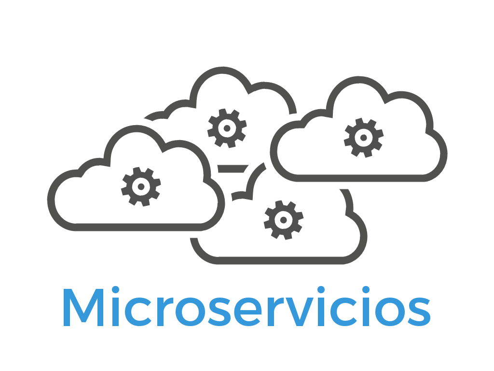
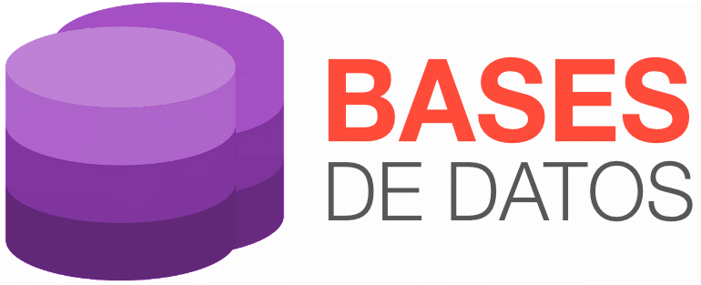

React.js, Java Spring boot, Docker, Kubernetes, JWT
Experiencia: 4 años
Definiciones e implementaciones en diseños de arquitectura de software microservicios, definiendo las mejores prácticas en implementación de servicios de negocio en contenedores orquestados con herramientas instaladas en Servicios de Infraestructura basadas en Cloud

Oracle, Postgres, Mysql, ETL
Experiencia: 10 años
Amplia experiencia en soluciones de uno de los elementos más importantes del ciclo de vida de los sistemas de información:
LOS DATOS. Las puestas en producción de estos sistemas han sido exitosas gracias a los correctos diseños de bases de datos relacionadas así como su acertada configuración, seguridad y tunning para soportar peticiones de los servicios de Backend que los requieran